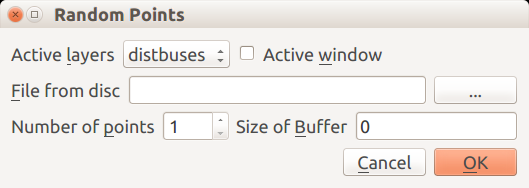

Tworzenie własnego pluginu¶
W tej części zostanie omówiony w pełni działający plugin który ma spełniać następujące zadania:
- Ma tworzyć losowy zbiór punktów, zasięg przestrzenny zbioru punktów ma być generowany na podstawie:
- Wskazanego pliku geoprzestrzennego pobieranego z dysku
- Wybranej warstwy załadowanej już do środowiska QGIS
- Aktywnego zasięgu obszaru roboczego
- Użytkownik ma możliwość wskazania dwóch parametrów: A. liczby punktów (min 1) B. opcjonalnego bufora, który pozwoli zawężać lub rozszerzyć zakres generowania punktów względem wskazanego zasięgu.
Ponieważ punkt #1 pozwala na wybór jednej opcji z trzech, użytkownik musi mieć pewność która opcja została wybrana, jeżeli zmienił zdanie. W tym celu na poziomie interakcji z użytkownikiem należy wbudować mechanizmy, które mają zapobiegać niejednoznaczności wyboru. Na poziomie interface należy również uniemożliwić wskazania liczby punktów mniejszej niż 1.
W czasie przygotowania parametrów algorytmu mogą pojawić się sytuacje, w których wykonanie algorytmu nie będzie możliwe. W takiej sytuacji należy tak przygotować kod, aby plugin poinformował użytkownika o niemożności wykonania zadania i wskazał opcjonalnie sposób poprawienia zadania. Te elementy, które muszą być obsłużone to:
- Sytuacja, gdy wskazany plik do pobania zasięgu (#1) nie istnieje
- Sytuacja, gdy wybrany plik nie jest warstwą geoprzestrzenną
- Gdy zasięg + bufor tworzy zbyt mały region (o ujemnej powierzchni)
- Gdy wprowadzono wartość dla bufora, która nie jest liczbą
Dodatkowym problemem będzie prawidłowe zapewnienie komunikacji pomiędzy interface a ciałem skryptu wykonującego plugin.
Plik interface¶
Zrozumienie materiału tej części samouczka wymaga zapoznania się z materiałami dotyczącymi tworzenia interface graficznych przy pomocy biblioteki Qt. Dodawanie kolejnych elementów jest czynnością schematyczną. Dodajemy widget, ustawiamy jego właściwości. Lista właściwości dostępna jest w dokumentacji każdego widgetu, dodatkowo wszystkie widgety dziedziczą własności obiektu nadrzędnego widget. Dodajemy layout, porządkujemy elementy w layoucie (od lewej dla poziomych od góry dla pionowych).
Informacja
Brak dobrego źródła danych dla PyQt5, a wskazana wersja zawiera api PyQt4. Różnice między oboma wersjami api nie są duże, i są opisane <https://www.riverbankcomputing.com/static/Docs/PyQt5/> __.
Widgety dodawane do formatki dzielą się na aktywne - tj takie których zawartość zmienia się w trakcie jej działania, i których zawartość jest przekazywana do drugiej części pluginu oraz takie, które są inicjowane na początku
Na podstawie wcześniej przygotowanej formy tworzymy plik interface o nazwie rpForm.py. Do pliku importujemy niezbędne biblioteki oraz tworzymy klasę o nazwie dialogForm dziedziczącą z QDialog. Sposób zbudowania interface wymaga wykonania przygotowania 3 poziomych layoutów: dla rozwijanego menu; dla pola wyboru pliku oraz dla parametrów generowania punktów. Na sam koniec zostanie dodany layout pionowy, który połączy wszystkie elementy w całość. Jako elementy udostępnione w całej klasie są tylko aktywne elementy, z których pobieramy wartości, pozostałe elementy które się nie zmieniają funkcjonują jedynie w czasie wywoływania formatki. Elementy z pierwszej grupy muszą być być częścią klasy, czyli zostać poprzedzone .self
- Linia wyboru z listy lub obszaru roboczego
- Pierwszy element zawiera listę wyboru aktywnych warstw geoprzestrzennych wraz z etykietą
- Element drugi zawiera pole checkBox pozwalające na wskazanie obszaru roboczego (canvas) jako źródła zasięgu dla generowanego zestawu punktów. Element ten nie jest związany z poprzednim, po prostu wykorzystuje wolne miejsce
- Dodajemy zbiór widgetów pozwalajacy wybrać plik z dysku. Zbiór składa
się pola w którym pojawi się ścieżka do pliku oraz przycisk
uruchamiający pole dialogowe pozwalające wybrać plik z dysku. Nazwę i
ścieżkę można też wpisać ręcznie. Niestety, przycisk “nie wie” co ma
zrobić. W tym celu:
- Widget wywołuje zdażenie ``clicked()`` Należy połączyć widget przycisk z funkcją, którą nazwaliśmy chooseButton_clicked().
- W reakcji na zdarzenie wywołuje okno dialogowe QFileDialog.getOpenFileName(), które zwróci ścieżkę dostępu do pliku.
- Po zakończeniu działania okna zmienimy właściwość text pola chooseField ustawiając ją na wartość zmiennej zwróconej przez QFileDialog
- Kolejny layout element będzie zawierał pole pozwalające wybrać ilość punktów oraz wprowadzić wartość bufora
- Do ilości punktów użyjemy widgetu o nazwie spinbox, dla którego dodatkowo dodamy ograniczenie minimalnej wartości na 1. Dzięki temu nie musimy obsługiwać potencjalnego błędu związanego z negatywną lub zerową liczbą punktów.
- Do Wprowadzenia bufora użyjemy pola tekstowego, z domyślną wartością: 0. Niestety do pola można wprowadzić cokolwiek, w związku z tym obsługę tego wyjątku musimy oprogramować osobno, w drugiej części pluginu.
- Dodajemy standardowe przyciski formy Cancel|Ok
- Budujemy główny, pionowy layout dodając poprzednie layouty oraz buttonBox
- Następny element to oprogramowanie zmiany decyzji użytkownika co do źródła zasięgu generowanej warstwy punktowej. Jest wiele możliwości rozwiązania tego problemu w tym również takie, jak łączenie zasięgów (część wspólna lub suma) wzajemna weryfikacja itp. Każde z tych
rozwiązań wymaga osobnego kodu, który wykracza poza podstawowe szkolenie. Zadanie zostanie zrealizowane w sposób najprostszy, każdy kolejny wybór będzie kasował pozostałe. Zostanie to rozwiązane przy pomocy funkcji ``change()``, która będzie czyściła wszystkie aktywne elementy, za wyjątkiem tego, który ostatnio został zmieniony. Informacja, który to był obiekt, będzie przekazywana do funkcji jako zmienna
- Dla pola wyboru z dysku funkcja będzie wywoływana po ustawieniu pola chooseField na scieżkę dostępu i będzie czyściła comboBox i checkBox
- W przypadku zmiany stanu comboBox i checkBox nie tworzymy
osobnych funkcji, ale łączymy zdarzenia zmiany stanu widgetów:
currentIndexChangedistateChangedz funkcjąchoose(). Niestety, w slotach mogą znajdować się jedynie fukcje bez parametrów, z tego powodu zastosujemy operator lambda, który utworzy nam bezparametrową funkcję anonimową, której ciałem będzie funkcja choose() z parametrem “combo” i “check” odpowiednio dla każdego z widgetów.
Planowany wygląd formatki:
Pełny kod formatki rpForm.py:
from PyQt5.QtCore import *
from PyQt5.QtGui import *
from PyQt5.QtWidgets import *
import sys
class dialogForm(QDialog):
def __init__(self):
super().__init__()
self.setWindowTitle("Random Points")
#choose from list or canvas
comboLayout=QHBoxLayout() #1
comboLabel=QLabel("Active &layers") #A
self.chooseCombo=QComboBox()
comboLabel.setBuddy(self.chooseCombo)
comboLayout.addWidget(comboLabel)
comboLayout.addWidget(self.chooseCombo)
checkLabel=QLabel("Active &window") #B
self.checkCanvas=QCheckBox()
checkLabel.setBuddy(self.checkCanvas)
comboLayout.addWidget(self.checkCanvas)
comboLayout.addWidget(checkLabel)
comboLayout.addStretch()
#choose from disc
fieldLayout=QHBoxLayout() #2
fieldLabel=QLabel("&File from disc")
self.chooseField=QLineEdit()
chooseFiledButton=QPushButton("...")
fieldLabel.setBuddy(self.chooseField)
fieldLayout.addWidget(fieldLabel)
fieldLayout.addWidget(self.chooseField)
fieldLayout.addWidget(chooseFiledButton)
#points and buffer
setupLayout=QHBoxLayout() #3
self.npointsSpin=QSpinBox() #A
self.npointsSpin.setMinimum(1)
npointsLabel=QLabel("Number of &points")
npointsLabel.setBuddy(self.npointsSpin)
setupLayout.addWidget(npointsLabel)
setupLayout.addWidget(self.npointsSpin)
self.bufferField=QLineEdit() #B
bufferLabel=QLabel("Size of &Buffer")
bufferLabel.setBuddy(self.bufferField)
self.bufferField.setText("0")
setupLayout.addWidget(bufferLabel)
setupLayout.addWidget(self.bufferField)
setupLayout.addStretch()
#standard buttons
buttonBox = QDialogButtonBox() #4
buttonBox.setStandardButtons(QDialogButtonBox.Cancel|QDialogButtonBox.Ok)
#final layout
mainLayout=QVBoxLayout() #5
mainLayout.addLayout(comboLayout)
mainLayout.addLayout(fieldLayout)
mainLayout.addLayout(setupLayout)
mainLayout.addWidget(buttonBox)
self.setLayout(mainLayout)
#basic connections
buttonBox.accepted.connect(self.accept) #4
buttonBox.rejected.connect(self.reject)
chooseFiledButton.clicked.connect(self.chooseButton_clicked) #2A
self.chooseCombo.currentIndexChanged.connect(lambda: self.change("combo")) #6B
self.checkCanvas.stateChanged.connect(lambda: self.change("check"))
def chooseButton_clicked(self): #2A
fileName = QFileDialog.\
getOpenFileName(self,"File to take extend from", "","All Files (*)") #2B
self.chooseField.setText(fileName) #2C
# remove remained selectors
self.change("field") #6A
def change(self,what): #6
''' This function allow to reset other elements
except pointed by `what` var '''
if what != "combo": self.chooseCombo.setCurrentIndex(0)
if what != "check": self.checkCanvas.setChecked(False)
if what != "field": self.chooseField.clear()
Właściwy algorytm¶
Część ogólna: definicja klasy i funkcje standardowe¶
Po zaimportowaniu niezbędnych bibliotek, pliku resources oraz klasy dialogForm z pliku rpForm tworzymy klasę, którą nazwiemy ``randomPoints``, działanie funkcji init(), initGui() oraz unload() jest takie same jak w przypadku omówionego poprzednio “pluginu minimum”. Zmianie uległy jedynie elementy definiujące umieszczenie pluginu w interface użytkownika.
from PyQt5.QtCore import *
from PyQt5.QtGui import *
from qgis.core import *
import numpy as np
import os
from . import resources
from .rpForm import dialogForm
class randomPoints:
def __init__(self, iface):
self.iface = iface
self.dialog=dialogForm()
self.registry = QgsProject.instance()
def initGui(self):
self.action = QAction(QIcon(":/plugins/randomPoints/icon.png"), "Random points", self.iface.mainWindow())
self.action.setStatusTip("Generates random points using existing extent")
self.action.triggered.connect(self.run)
self.iface.addToolBarIcon(self.action)
self.iface.addPluginToMenu("&Home made", self.action)
def unload(self):
self.iface.removePluginMenu("&Home made", self.action)
self.iface.removeToolBarIcon(self.action)
Funkcja run¶
Funkcja ta zawiera wywołania funkcji zdefiniownanych w klasie randomPoints().
- W pierwszej kolejności wywołuje fukcje przygotowujące inferface
- Następnie wykonuje formatkę i jeśli zakończy się ona sukcesem…
- Pobiera dane z formatki funkcją parse_input…
- Wykonuje właściwą część skryptu
def run(self):
self.create_layer_list() #1
self.dialog.show()
result = self.dialog.exec_() #2
if result:
self.parse_input() #3
self.create_point_file() #4
Funkcja create_layer_list¶
Tak funkcja ma na celu przygotowanie danych wejściowych do formatki i przesłanie jej do formatki, jeszcze zanim zostanie ona pokazana. Funkcja ta ma dostęp do obiektu ``dialog`` utworzonego w funkcji _init_ klasy i tym samym ma dostęp do wszyskich pól, które są częścią klasy (zaczynają się od self).
- W pierwszej kolejności funkcja czyści listę
- Następnie pobiera z interface QGIS wszystkie warstwy (leged) w aktywnym widoku, wymagana jawna konwersja na listę
- Następnie dla każdej warstwy pobiera jej nazwę i buduje z nich listę. Na początku jest linia pusta, tak aby wskazać sytuację, gdy żadna warstwa nie jest wybrana
- W ostatnim korku lista nazw zostaje przypisana do combo
def create_layer_list(self):
''' Build list of layers'''
self.dialog.chooseCombo.clear() #1
self.layers = list(self.registry.mapLayers().values()) #2
layer_list = [""]+[layer.name() for layer in self.layers] #3
self.dialog.chooseCombo.addItems(layer_list) #4
Funkcja parse_input¶
Ta część skryptu jest podzielona na funkcję główną i funkcje pomocnicze (definiowane jako prywante klasy) i ma na celu pobranie argumentów z formatki, sprawdzenie ich poprawności oraz przekazanie tych parametrów do dalszej części skryptu. Interesują nas następujące parametry: bufor i liczba punktów a ponieważ zasięg może pochodzić z różnych źródeł interesuje nas tylko zasięg do utworzenia punktów a nie jego źródło. W tej części definiujemy również docelową projekcję tworzonej warstwy.
Funkcja wykonuje następujące czynności:
- Pobranie wartości bufora z pola bufferField i sprawdzenie #A czy można go skonwertować na liczbę. Jeżeli nie wypisać komuniakt na messageBar #B i opuścić skrypt #C.
- Pobrać liczbę punktów. Niczego nie trzeba sprawdzać,formatka nie wypuści czegoś co nie jest liczbą całkowitą większą od 0
- Pobrać trzy zmienne:
- index z combo
- nazwę pliku z pola z nazwą
- stan checkboxa
- Pobrać epsg z registry/canvas jako domyślne dla warstwy docelowej
- zainicjować zmienną extent
- Jeżeli index jest większy od 0 wybrano warstwę z Canvas a ponieważ pozostałe zostały wyczyszczone, pobieramy extent ze wskazanej warstwy. Zmniejszamy index o 1 ponieważ index 0 jest przypisany do pustej linijki
- Jeżeli zmienna filename ma wartość pobieramy extent ze wskazanego pliku
- W każdym pozostałym przypadku pobieramy extent z canvas (nawet jak go nie wybraliśmy). Jest to opcja domyślna jeżeli użytkownik nie wybierze żadnej warstwy
def parse_input(self):
gbuffer = self.dialog.bufferField.text() #1
try:
buff = float(gbuffer) #A
except:
message = "buffer parameter " + gbuffer + " is not a valid number" #B
self.iface.messageBar().pushMessage("Error", message, 2) #B
exit #C
self.buffer = buff
self.npoints = self.dialog.npointsSpin.value() #2
index = self.dialog.chooseCombo.currentIndex() #3A
filename = self.dialog.chooseField.text() #3B
check = self.dialog.checkCanvas.checkState() #3C
self.epsg = self.registry.crs().authid() #4
self.extent = None #5
if index > 0:
self.__get_extent_from_active_layers(index-1) #6
elif filename != "":
self.__get_extent_form_file(filename) #7
else:
self.__get_extent_from_canvas() #8
Funkcje pomocnicze¶
Służą do pobrania zasięgu z jednej z trzech opcji:
Funkcja __get_extent_form_file¶
- Funkcja pobiera jako argument nazwę pliku.
- Sprawdza czy plik istnieje
- Sprawdza czy jest to plik geoprzestrzenny (isValid)
- Pobiera epsg z warstwy docelowej. Jak nie znajduje używa domyślnego dla canvas
def __get_extent_form_file(self,filename): #1
if not QFileInfo(filename).isFile(): #2
self.iface.messageBar().pushMessage("Error", "cannot find " + filename, 2)
exit
# continue processing, check if geospatial layer
layer= processing.getObject(filename)
if not layer.isValid(): #2
message = filename + " is not valid geospatial layer"
self.iface.messageBar().pushMessage("Error", message, 2)
exit
self.extent = layer.extent() #3
self.epsg = layer.crs().authid() or self.epsg #4
Funkcja __get_extent_from_active_layers¶
- Pobiera jako argument index warstwy
- Pobiera extent ze wskazanej warstwy (są na liście zbudowanej w funkcji get_list_of_layers
- Pobiera epsg z warstwy docelowej. Jak nie znajduje używa domyślnego dla canvas
def __get_extent_from_active_layers(self,index): #1
self.extent = self.layers[index].extent() #2
self.epsg = self.layers[index].crs().authid() or self.epsg #3
Funkcja__get_extent_from_canvas``
Po prostu pobiera extent z obszaru roboczego. Nic nie musi sprawdzać, używa epsg warstwy roboczej ustawione w funkcji parse_input
def __get_extent_from_canvas(self):
self.extent = self.iface.mapCanvas().extent()
Funkcja główna: create_point_file¶
Główna funkcja ma już wszystkie niezbędne argumenty. Są one sprawdzone pod względem poprawności i dostępne dla wszystkich funkcji klasy. Funkcja działa następująco:
- Dla uproszczenia zapisu, przepisuje wartosci ze zmiennych klasy do zmiennych lokalnych
- Sprawdza czy zasięgi po dodaniu bufora (ujemnego) nie zmniejszą się poniżej zera, jeżeli tak jest skrypt zakończy działanie
- Losuje dwie listy dla x i y od od min do max \(\pm\) buffer
- Łączy dwie listy w listę par punktów (tuples).
- Tworzy nową warstwę punktową w pamięci
- Dodaje punkty, tak samo jak w OGR z tą różnicą że najpirw tworzona
jest lista features i inicjowany jest atrybut id wartością 1; a
następnie:
- Tworzone jest feature i kolejny id (enumerate)
- Tworzony jest punkt (z krotki)
- Dodawana jest geometria…
- …oraz atrybut id zwiększony o 1
- Na koniec feature jest dodawane do listy
- Lista features dodawana jest do zbioru danych
- Następuje aktualizacja zasięgu warstwy (nie jest aktualizowany automatycznie)
- Warstwa jest dodawana do canvas/registry. Nie jest automatycznie zapisywana
def create_point_file(self):
ext = self.extent #1
buff = self.buffer
npoints = self.npoints
if ext.xMinimum()-buff>=ext.xMaximum()+buff or \
ext.yMinimum()-buff>=ext.yMaximum()+buff: #2
message = "layer extent is too small or buffer to large"
self.iface.messageBar().pushMessage("Error", message, 2)
exit
x=list(np.random.uniform(ext.xMinimum()-buff,ext.xMaximum()+buff,npoints)) #3
y=list(np.random.uniform(ext.yMinimum()-buff,ext.yMaximum()+buff,npoints))
points = zip(x,y) #4
layerSource ='Point?crs='+str(self.epsg)+'&field=id:integer' #5
player = QgsVectorLayer(layerSource, 'random' ,'memory')
Qpoints=[] #6
for id,pt in enumerate(points):
Qpoint = QgsFeature() #A
qpt = QgsPointXY(*pt) #B
Qpoint.setGeometry(QgsGeometry.fromPointXY(qpt)) #C
Qpoint.setAttributes([id+1]) #D
Qpoints.append(Qpoint) #E
player.dataProvider().addFeatures(Qpoints) #7
player.updateExtents() #8
self.registry.addMapLayer(player) #9